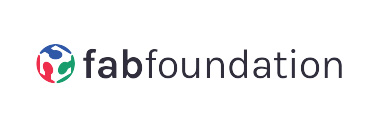
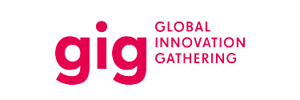
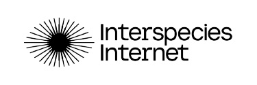
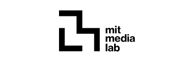

› SEEED FOR SDGs
Put your skills to work on
real problems.
You know how to build. Here are real places to apply what you know—with open hardware, field projects, and people working toward the SDGs.
Explore by theme
- WaterClimate & Resources
- EducationLearning & Open Knowledge
- Local InnovationResilient Communities
› PROJECT AREAS
Find a field that matters to you.
Explore projects and stories across four areas of sustainable action. These themes organize the work; specific ways to participate live with each project and in the community.
Life & Ecosystems
Biodiversity, wildlife, oceans, forests, and new ways to understand other species.
Explore the initiative Water · Energy · AgricultureClimate & Resources
Practical approaches to sensing, resource efficiency, and resilient infrastructure.
Explore stories Education · Citizen ScienceLearning & Open Knowledge
Tools and shared knowledge that help more people learn, make, and participate.
Explore stories Local Innovation · InclusionResilient Communities
Technology shaped around local needs, from communication to community infrastructure.
Explore stories› TOOLS × CHALLENGES
Tools meet
real challenges.
Have a device but no project in mind? Browse activities on the Chaihuo+ Community Map to see what makers are working on. Have a challenge? Share an activity and connect with people who may be able to help, including makers near you.
Explore the Community MapOpens the Chaihuo+ Global Maker Ecosystem Map in a new tab.
TWO WAYS TO START
- HAVE TOOLSFind somewhere to use themExplore activities and the people behind them. See where your hardware or skills could help.
- HAVE A CHALLENGEFind people to work withShare an activity on the map so interested makers, including those nearby, can discover it and get in touch.
› FROM IDEA TO FIELD
Tools for the work ahead.
Once you find a problem worth working on, start with the resources you need: hardware to prototype, technical approaches to adapt, and practical guides to help you build.
›05 SIGNATURE FIELD CAPABILITY
Take Innovation to the Field
Some challenges cannot be solved from behind a desk. Chaihuo MCV is a mobile innovation platform designed to bring tools, people, and experimentation directly into the field.
From workshops and prototyping to environmental sensing and community deployment, the mobile lab creates space for technology to meet local realities.
Explore Chaihuo MCV› BRING A PROJECT
Have a problem worth solving?
If you work with a research team, organization, or local community, tell us about the challenge you are facing and where technology might help.
Share the problem, what you have tried, and what kind of help you need. The Seeed team can review whether its tools or network may be relevant; support is considered case by case.
Taking research beyond the lab?
Looking for a technology partner for an SDG initiative?
Building solutions rooted in local needs?
› PROJECT INTRODUCTION
Tell us what you are working on.
Completing this form opens a draft in your email app. Review the message, then select Send to contact branding@seeed.cc.



